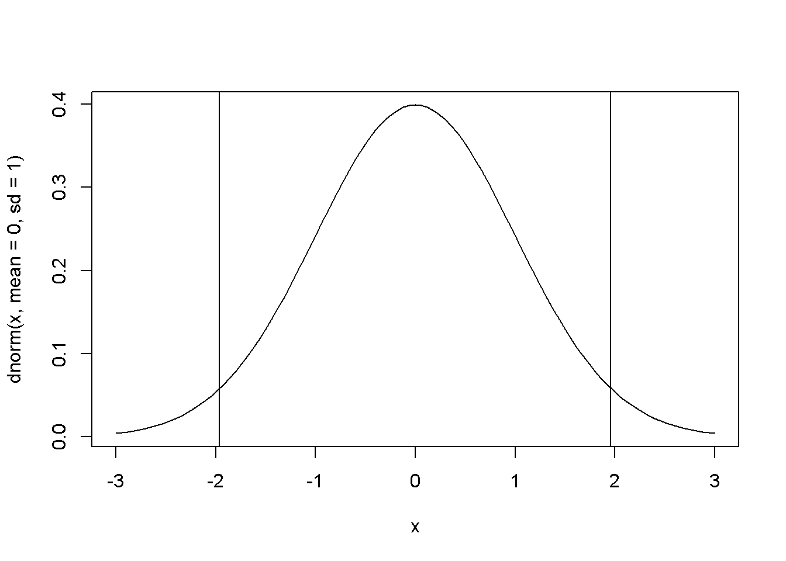

標準正規分布表を作ってみた
Page content
こんにちは！
今日は、標準正規分布表を作りたいと思います！
これを作ろうと思った経緯は、
標準正規分布表を見たい
↓
検索する
↓
いろいろ種類があって面倒
↓
Rでつくっちゃえばいいんじゃない？
って思い立ったのがきっかけですw
では、コードをみていきましょう！
全コードは一番下に載せてあります。忙しい人は、そちらを参照してください！
分析フロー
- パッケージを用意する
- 正規分布を作る関数の紹介
- グラフ化
- 標準正規分布表の作成
環境
version## _
## platform x86_64-w64-mingw32
## arch x86_64
## os mingw32
## system x86_64, mingw32
## status
## major 4
## minor 0.3
## year 2020
## month 10
## day 10
## svn rev 79318
## language R
## version.string R version 4.0.3 (2020-10-10)
## nickname Bunny-Wunnies Freak Outパッケージ
Packages <- c("tidyverse", "DT")
lapply(Packages, library, character.only = TRUE)標準正規分布を作る関数の紹介
こんなのがありますよーってので紹介しておきます。
dnorm(x = 0, mean = 0, sd = 1) # x = 0の時の確率密度関数## [1] 0.3989423qnorm(1-0.975, lower.tail = FALSE) # Prob(Z<z) = 0.975のz値 ## [1] 1.959964pnorm(1.96, lower.tail = TRUE) # Prob(Z < 1.96)の下側確率 ## [1] 0.9750021グラフ化
標準正規分布は、こんな形をしています。 仮説検定などで上側0.25％以上、下側0.25%以下の確率をよく用いるので、そこに直線を引いています。
curve(dnorm(x, mean = 0, sd = 1), from = -3, to = 3)
abline(v = qnorm(0.025))
abline(v = qnorm(0.975))
標準正規分布表の作成
標準正規分布表は、 \[-3 <= z < 3\]とします。
あと、小数点3位まであれば事足りるでしょってことで、小数点4位以降を丸めました。
n <- 3
z <- seq(-n, n - 0.01, by = 0.01) # Z値として利用する-4から3.99までの等差数列を作成
Quantile <- pnorm(z, lower.tail = TRUE) # Prob(Z < z)の下側確率
Matrix <- matrix(Quantile, ncol = 10, byrow = TRUE) # 行列の作成
Matrix <- round(Matrix, digits = 3) #小数点第4位以降をまるめる
colnames(Matrix) <- 0:9 # 行列の行(colum)の変更
rownames(Matrix) <- seq(-n, n - 0.1, by = 0.1) %>% round(digits = 1) #行列の列(row)の変更標準正規分布表の表示
datatable(Matrix)最後に、、、
いかがでしたか？ Rでも案外簡単に作れましたね。
標準正規分布表は、エクセルでも作れると思うのですが、例えばZ値を\[ -3 <= z < 3 \]でななく、\[ -4 <= z < 4 \]に変更したいといったときは、Rの方が便利だと思います。
最後まで、読んでいただいてありがとうございました！
adios!!
## 正規分布を作る関数の紹介
dnorm(x = 0, mean = 0, sd = 1) # x = 0の時の確率密度関数
qnorm(1-0.975, lower.tail = FALSE) # Prob(Z<z) = 0.975のz値
pnorm(1.96, lower.tail = TRUE) # Prob(Z < 1.96)の下側確率
## グラフ化
curve(dnorm(x, mean = 0, sd = 1), from = -3, to = 3)
abline(v = qnorm(0.025))
abline(v = qnorm(0.975))
## 標準正規分布表の作成
z <- seq(-4, 3.99, by = 0.01) # Z値として利用する-4から3.99までの等差数列を作成
Quantile <- pnorm(z, lower.tail = TRUE) # Prob(Z < z)の下側確率
Matrix <- matrix(Quantile, ncol = 10, byrow = TRUE) # 行列の作成
colnames(Matrix) <- 0:9 # 行列の行(colum)の変更
rownames(Matrix) <- seq(-4, 3.9, by = 0.1) %>% round(digits = 1) #行列の列(row)の変更